Vogliamo calcolare l'area al di sotto di una curva nell'intervallo [a, b].
Per comodità, per adesso partiremo da a = 0, quindi l'intervallo è lungo b.
Possiamo costruire una serie di intervallini tutti con la stessa misura \frac b n, con n = il numero di intervalli.
Ogni intervallo inizierà a x_k = k \cdot \frac b n.
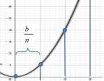
Dobbiamo attribuire ad ogni intervallo un valore.
Per esempio, possiamo approssimare per difetto (f(x_k)) o per eccesso (f(x_{k+1})).
Avremo un rettangolo per ogni intervallo, di cui possiamo facilmente calcolarne l'area usando base per altezza.
La base sarà la lunghezza dell'intervallo, mentre l'altezza sarà il valore che abbiamo attribuito all'intervallo per approssimare la funzione.
Sommando le aree di tutti i rettangoli, otterremo un'approssimazione dell'area sotto la curva.
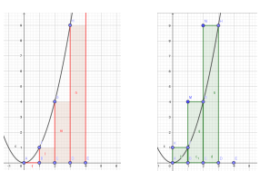
Intuitivamente, l'area precisa sarà tra l'approssimazione per difetto e l'approssimazione per eccesso.
\sum_{k = 1}^{n} f(x_{k-1}) \leq A \leq \sum_{k = 1}^{n} f(x_{k})$
Possiamo notare che, più si aumenta il numero di rettangolini, diminuendo quindi la loro base, più avviciniamo l'approssimazione all'area vera e propria.
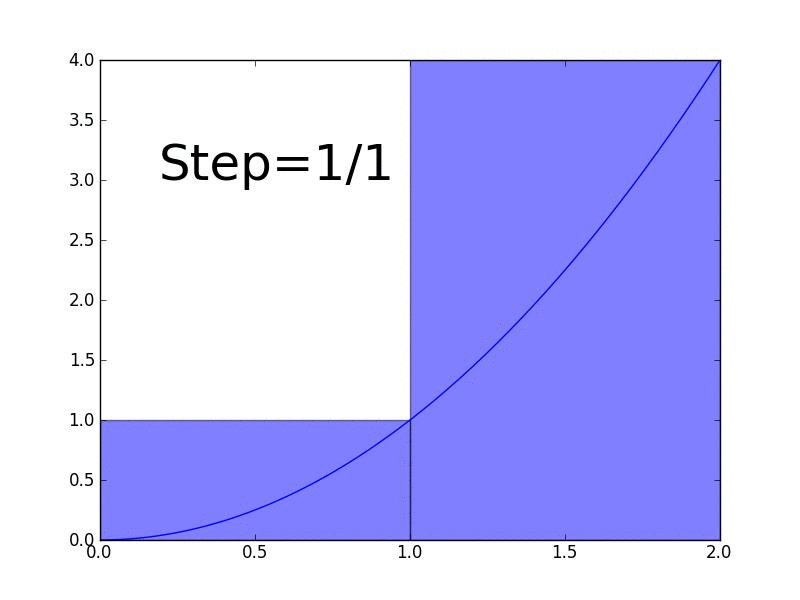Sia f: [a, b] \to R continua. Essa è integrabile se:
\lim_{\delta \to 0} \{\sum_{k = 0}^{n - 1} [(x_{k + 1} - x_{k})f(\xi_k)]\} = \int_a^bf(x)dx
esiste ed è finito. Chiameremo integrale della funzione f rispetto alla variabile x da a a b.
Cosa sta succedendo qui?
(x_{k + 1} - x_{k}) è la base di uno dei rettangolini.
\xi_k è un punto intermedio tra gli estremi dell'intervallo, quindi x_k < \xi < x_{k + 1}
\delta è la base più grande che troviamo tra i rettangolini. Infatti i rettangolini non sono obbligati ad avere tutti la stessa base,
ma dato che \delta tende a 0, anche tutte le altre basi tenderanno a 0.
dx a destra sarà il cambiamento di x. Rappresenta la base del rettangolino e ci fa sapere che stiamo integrando rispetto a x.
L'integrale di Riemann è una formalizzazione del concetto del metodo di esaustione.
Facciamo un limite con delta tendente a 0, dove delta rappresenta la lunghezza del segmento più grande che usiamo per suddividere la curva. Quindi tutti i segmenti avranno lunghezza tendente a zero.
In questo limite stiamo facendo una sommatoria, per ogni segmento aggiungiamo base * il valore che usiamo per approssimare la funzione in quel piccolissimo segmento. Possiamo usare il valore di f calcolata in \xi_k, che sta per un punto intermedio tra gli estremi di quel segmento piccolissimo.
Se questo limite di sommatoria esiste ed è finito, lo chiamiamo integrale della funzione f rispetto alla variabile x da a a b.
Se f è positiva in questo intervallo, allora l'area sottesa dal grafico sarà appunto \int_a^bf(x)dx.
Se invece è negativa, allora l'area sarà -\int_a^bf(x)dx.
Nel caso in cui abbia delle parti positive e delle parti negative, dovremo separarle e fare l'integrale di intervalli in cui la funzione è solo positiva o negativa.
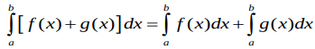
L'integrale della somma tra due funzioni è uguale alla somma tra gli integrali di ciascuna funzione.
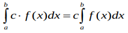
L'integrale di una funzione moltiplicata per uno scalare è uguale allo scalare moltiplicato all'integrale della funzione.
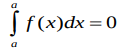
L'integrale calcolato in un intervallo da a a a sarà uguale a 0.
Non c'è un area da calcolare. Il segmento è vuoto, tra a e a non c'è nulla.
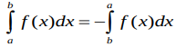
L'integrale calcolato 'al contrario' da b ad a, quindi partendo dall'estremo più grande, avrà il segno opposto dell'integrale calcolato da a a b.
Questo ha senso guardando la definizione di integrale.
\lim_{\delta \to 0} \{\sum_{k = 0}^{n - 1} [(x_{k + 1} - x_{k})f(\xi_k)]\}
(x_{k + 1} - x_{k}) sarà negativo dato che x_k sarà più grande di x. La moltiplicazione quindi avrà il segno opposto.
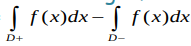
Sappiamo che f è positiva in una parte D+ del dominio mentre è negativa in un altra parte D- del dominio.
L'area del dominio sara data dalla differenza tra l'integrale calcolato in D+ e l'integrale calcolato in D-.
La differenza serve a cambiare il segno dell'integrale calcolato in D- dato che esso sarà negativo.
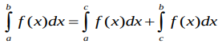
La somma tra gli integrali calcolati in una scomposizione dell'intervallo completo sarà uguale all'integrale calcolato nel'intervallo completo.
Quindi, avendo un intervallo da a a c, e sapendo che in mezzo troviamo b, possiamo sommare l'integrale da a a b con quello da b a c per ottenere lo stesso risultato che avremmo ottenuto calcolando l'integrale nell'intervallo completo.
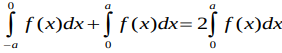
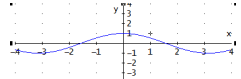
Per calcolare l'integrale da -a a a di una funzione pari, possiamo limitarci a calcolare l'integrale da 0 ad a e poi moltiplicarlo per 2. Questo perché la funzione è simmetrica rispetto all'asse delle y.
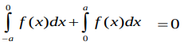
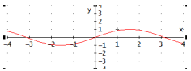
Le funzioni dispari invece sono definite come -f(x) = f(-x).
Quindi, l'integrale calcolato in un intervallo negativo sarà l'esatto opposto dell'integrale calcolato in un intervallo positivo. Sommandoli si otterrà 0.
\int_a^b c \cdot dx = c(b - a)
Una funzione costante, graficamente, è una retta orizzontale. Considerando anche lo spazio sotteso dalla retta troveremo un semplice rettangolo.
Per calcolare l'area sotto la retta orizzontale basta usare base per altezza.
Se una funzione f è più grande di un altra funzione g in tutti i punti dell'intervallo, allora l'area di f sarà sicuramente più grande di quella di g.
f(x) \geq g(x) \forall x \in [a, b] \implies \int_a^bf(x)dx \geq\int_a^bg(x)dx
Sia f continua in un intervallo chiuso e limitato [a, b]. Allora la funzione è sicuramente integrabile in [a, b].
Avendo un intervallo chiuso stiamo togliendo i casi in cui potremmo avere asintoti verticali.
La discontinuità non vieta sempre l'integrabilità.
Se f è continua e integrabile in [a, b], allora esiste un punto che possiamo usare come altezza del segmento per calcolare l'area di tutta la funzione.
\exist x_0 \in [a, b]: \int_a^bf(x)dx = f(x_0)(b - a)
L'integrale è indefinito quando uno degli estremi non è conosciuto, varia.
Producono come risultato una funzione invece che un numero. Questa funzione prende come argomento l'intervallo indefinito, e calcolerà l'area sotto la curva nell'intervallo [a, b].
\int_a^x f(t)dt = F(x)
f è la funzione integranda, che deve essere integrata, F è la funzione integrale, la funzione che ci calcola l'integrale. F viene chiamata la primitiva di f.
Qui abbiamo scritto f(t) per poter scrivere la x al posto dell'estremo destro dell'intervallo, evidenziando che l'intervallo destro è variabile.
Avendo una funzione f integrabile in [a, b], e sia
F(x) = \int_a^x f(t)dt
Se f(t) è continua allora F(x) è derivabile, e F'(x) = f(x).
Quindi, per ottenere F, siccome sappiamo che la sua derivata è uguale a f, allora dovremo fare l'inverso di una derivata. Dovremo ottenere la funzione la cui derivata è f.
Se F(x) è una primitiva di f, allora anche F(x) + c sarà una primitiva di f.
Quindi, noi a F possiamo aggiungere qualsiasi costante vogliamo, perché derivando, la costante si annulla, e otterremo sempre f.
La funzione è derivabile se esiste ed è finito il limite del rapporto incrementale.
Quindi, dimostriamolo.
\lim_{h \to 0} \frac{F(x+h) - F(x)}{h} = \\
\lim_{h \to 0} \frac{\int_a^{x+h}f(t)dt - \int_a^{x}f(t)dt}{h} = \\
Sappiamo che l'integrale di segno opposto è dato invertendo gli estremi dell'intervallo.
\lim_{h \to 0} \frac{\int_a^{x+h}f(t)dt + \int_x^{a}f(t)dt}{h} = \\
\lim_{h \to 0} \frac{\int_x^{a}f(t)dt + \int_a^{x+h}f(t)dt}{h} = \\
Adesso i due integrali al nominatore hanno un estremo in comune.
Infatti stiamo integrando prima da [x, a] e poi da [a, x+h].
Sappiamo, grazie alle proprietà degli integrali, che questo equivale a calcolare un singolo integrale da [x, x + h].
\lim_{h \to 0} \frac{\int_x^{x+h}f(t)dt}{h} = \\
Nell'enunciato del teorema, diciamo che il teorema vale se f(t) è continua.
Dato che f(t) deve essere continua, possiamo sfruttare il teorema della media.
Ovvero, sappiamo che c'è un punto \xi tra [x, x+h] che ci da l'altezza del rettangolo avente come base la dimensione dell'intervallo, e come area, l'area sottointesa dalla curva che stiamo integrando.
\lim_{h \to 0} \frac{(x + h - x)\cdot f(\xi)} {h} = \\
\lim_{h \to 0} \frac{h \cdot f(\xi)} {h} = \\
\lim_{h \to 0} f(\xi)= \\
E siccome h tende a zero e x < \xi < x+h, allora \xi tenderà a x.
\lim_{h \to 0} f(x) = \\
f(x)
Siccome la funzione è continua e in un intervallo chiuso, sappiamo sicuramente che f(x) esiste ed è finito.
Siccome abbiamo ottenuto che il limite del rapporto incrementale di F dà f(x), quindi un risultato che esiste ed è finito, allora F è derivabile.
Inoltre, abbiamo anche dimostrato che la derivata di F è uguale a f.
Gli integrali indefiniti possono essere usati per calcolare gli integrali definiti.
Avendo una funzione f integrabile in [a, b], e sia
per calcolare l'integrale definito \int_a^b f(x)dx possiamo prima risolvere l'integrale indefinito \int f(x)dx, trovando la primitiva F(x).
Poi, avremo che \int_a^b f(x)dx = F(b) - F(a)
Cosa succede se poniamo x = a? Dalle proprietà degli integrali sappiamo che un integrale calcolato nell'intervallo [a, a] è uguale a 0.
F(a) + c = \int_a^a f(t)dt \\ F(a) + c = 0 \\ c = -F(a) \\
Quindi, possiamo riscrivere la funzione primitiva come:
F(x) + c = \int_a^x f(t)dt \\ F(x) - F(a) = \int_a^x f(t)dt \\
Ponendo x = b si ha:
F(b) - F(a) = \int_a^b f(t)dt \\
Ecco una lista di integrali fondamentali, ottenuti semplicemente facendo l'inverso delle derivate fondamentali.
\int c \cdot dx = c \cdot x + k \\
\int x^ndx = \frac{x^{n+1}}{n +1} + c, \quad x \neq -1 \\
\int \frac 1 x dx = \ln|x| + c, \quad x > 0 \\
\int e^xdx = e^x + c\\
\int \sin x \cdot dx = -\cos x + c \\
\int \cos x \cdot dx = \sin x + c \\
\int \frac 1 {\cos^2x}dx = \tan x + c \\
\int \frac 1 {1 + x^2} dx = \arctan x + c \\
Ricordiamoci di come si calcola la derivata di una funzione composta.
D(g(f(x))) = g'(f(x)) \cdot f'(x)
Allora possiamo dire che \int g'(f(x)) \cdot f'(x)dx = g(f(x)) + c
Quindi dobbiamo riconoscere che all'interno della funzione integranda c'è un prodotto tra due funzioni, e una di queste è la derivata dell'argomento dell'altra funzione.
\int g'(x) \cdot f(x) \cdot dx = g(x) \cdot f(x) - \int g(x) \cdot f'(x) \cdot dx
L'integrazione per parti è una formula che ci permette di risolvere gli integrali in cui troviamo un prodotto, e ci rendiamo conto che uno dei fattori è la derivata di una certa funzione g.
f può essere qualsiasi funzione.
Comunque dobbiamo cercare di scegliere come g'(x) la funzione che sia facile da integrare, mentre f(x) deve essere facile da derivare.
Non è detto che questa formula ci dia un integrale fattibile da risolvere.
Questa formula discende dalla formula di derivazione di un prodotto tra due funzioni.
D(f(x) \cdot g(x)) = f'(x) \cdot g(x) + f(x) \cdot g'(x) \\
Siccome questi due oggetti sono uguali, e quindi rappresentano la stessa curva, allora anche il loro integrale sarà uguale.
\int D(f(x) \cdot g(x)) dx = \int [f'(x) \cdot g(x) + f(x) \cdot g'(x)] dx \\
Sappiamo che l'integrale e la derivata si annullano. A destra invece stiamo integrando una somma di funzioni, che possiamo suddividere in due integrali.
f(x) \cdot g(x) = \int f'(x) \cdot g(x)dx + \int f(x) \cdot g'(x) dx \\
Adesso basta riordinare un po' l'equazione e ritroveremo la formula per l'integrazione per parti.
f(x) \cdot g(x) - \int f'(x) \cdot g(x)dx = \int f(x) \cdot g'(x) dx \\ \int f(x) \cdot g'(x) dx = f(x) \cdot g(x) - \int f'(x) \cdot g(x)dx \\
E abbiamo concluso la dimostrazione.
Talvolta le funzioni possono avere una forma che le rendono di difficile lettura.
Possiamo scegliere di sostituire un termine problematico con un altro simbolo, risolvere l'integrale nella forma semplificata, per poi ricondurci alla forma originale.
Avendo \int f(x) dx
I passaggi da fare sono questi:
Pongo x = \varphi(t) con \varphi invertibile dato che poi dovremo tornare indietro.
dx = d[\varphi(t)] = \varphi'(t) \cdot dt. Il differenziale di dx diventa il differenziale di phi di t, ovvero la derivata di phi per il differenziale di t. Praticamente ci stiamo spostando all'asse delle t.
E t = \varphi^{-1}(x).
Quindi andremo a fare queste sostituzioni dentro l'integrale e a procedere con la risoluzione.
Noi fin'ora abbiamo parlato della risoluzione di integrali di funzioni continue in un intervallo chiuso e limitato, ma possiamo fare gli integrali anche in intervalli illimitati, oppure aperti.
Nella pratica, li calcoliamo come sempre usando la funzione primitiva, dentro il limite appropriato.
Se l'intervallo è illimitato a sinistra, calcoleremo il limite con a tendente a - \infty. Se è illimitato a destra, allora faremo tendere b a + \infty.
Se l'intervallo è aperto a sinistra, si farà il limite per una c tendente ad a^+. Se è aperto a destra, avremo una d tendente a b^-.
Se il limite ci dà infinito, allora diciamo che l'integrale diverge.
Se da 0, allora converge.
Sia f: [a, + \infty) \to R continua.
Allora possiamo prendere una parte del dominio e anche essa sarà continua.
\forall b \in R, b > a, f: [a, b] \to R è integrabile secondo Riemann.
f è integrabile in senso generalizzato se esiste ed è finito il limite
\lim_{b \to +\infty} \int_a^b f(x)dx = \int_a^{+\infty} f(x)dx = \lim_{b \to +\infty} [F(b) - F(a)]
Possiamo fare la stessa cosa con a \to -\infty.
\lim_{a \to -\infty} \int_a^b f(x)dx = \int_{-\infty}^{b} f(x)dx = \lim_{a \to -\infty} [F(b) - F(a)]
Oppure entrambi gli estremi tendono a infinito.
\lim_{a \to -\infty} \lim_{b \to +\infty} \int_a^b f(x)dx = \int_{-\infty}^{+\infty} f(x)dx = \lim_{a \to -\infty} \lim_{b \to +\infty}[F (b) - F(a)]
Sia f: [a, b) \to R continua.
\forall \epsilon > 0 \in R, f: [a, b-\epsilon] \to R è continua e integrabile secondo Riemann.
f è integrabile in senso generalizzato se esiste ed è finito il limite
\lim_{\epsilon \to 0^+} \int_a^{b-\epsilon} f(x)dx = \lim_{c \to b^-}\int_a^{c} f(x)dx = \lim_{c \to b^-} [F(c) - F(a)]
Sia f: (a, b] \to R continua.
\forall \delta > 0 \in R, f: [a+\delta, b] \to R è continua e integrabile secondo Riemann.
f è integrabile in senso generalizzato se esiste ed è finito il limite
\lim_{\delta \to 0^+} \int_{a+\delta}^{b} f(x)dx = \lim_{c \to a^+}\int_c^{b} f(x)dx = \lim_{c \to a^+} [F(b) - F(c)]
Come per le funzioni illimitate, possiamo anche combinare entrambi i casi.
In tutti i casi precedenti, se il risultato del limite è \pm\infty allora l'integrale è divergente.
Se il il limite non esiste allora l'integrale è indeterminato.